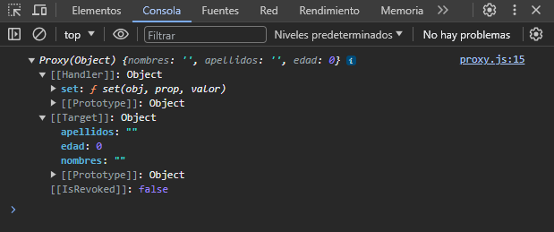
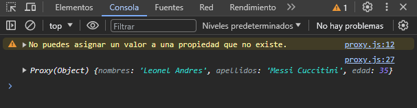

Creando un nuevo Proxy
Para crearlo necesitamos dos cosas, un apuntador o plantilla, y un manejador. El apuntador o conocido como "target" es un objeto con propiedades que nos servirá de plantilla para otro objeto. Y el manejador o conocido como "handler", es aquel que se encarga de asignar los valores según nuestro "target".
Empecemos creando nuestro target:
const registro = {
"nombres": "",
"apellidos": "",
"edad": 0
}
Nuestro target no es mas que un objeto cualquiera, este nos servirá para "respetar" los valores de las propiedades que queremos asignar. Para crearlo solamente definimos un objeto con las propiedades que queremos pero sin asignarles valor, solo dejarlos vacíos.
Ahora crearemos nuestro handler quien se encargara de enlazar o asignar los valores:
const handler = {
set(obj, prop, valor) {
obj[prop] = valor
}
}
Un manejador es un objeto con un método llamado .set(obj, prop, valor) el cual recibe tres parámetros, el objeto al que se hace referencia, la propiedad al cual se le asignara un valor, y el valor que se le asigna a la propiedad.
Una vez creado nuestro target y handler, ya podemos crear nuestro Proxy:
const usuario1 = new Proxy(registro, handler)
console.log(usuario1)
Lo creamos con su constructor, y este recibe dos parámetros, el target y el handler. Cuando mostramos por consola podemos ver lo siguiente:
Podemos observar que tenemos el target y el handler que hemos creado dentro del Proxy que acabamos de crear. Ahora ya podemos asignar valores al Proxy que hemos creado.
usuario1.nombres = "Leonel Andres"
usuario1.apellidos = "Messi Cuccitini"
usuario1.edad = 35
En el manejador podemos hacer validaciones, ya sea de tipos de datos, expresiones regulares, y una validación que podemos hacer es asignar valores a propiedades que solo se encuentren en el target.
const handler = {
set(obj, prop, valor) {
// validacion
if(Object.keys(obj).indexOf(prop) === -1) {
return console.warn("No puedes asignar un valor a una propiedad que no existe.")
}
obj[prop] = valor
}
}
Las validaciones se hacen dentro del método .set(obj, prop, valor) { ... } asi como el código que te acabo de mostrar. Asi al asignar un valor a una propiedad que no se encuentra dentro del target nos muestre una alerta.
usuario1.empleo = true
console.log(usuario1)
